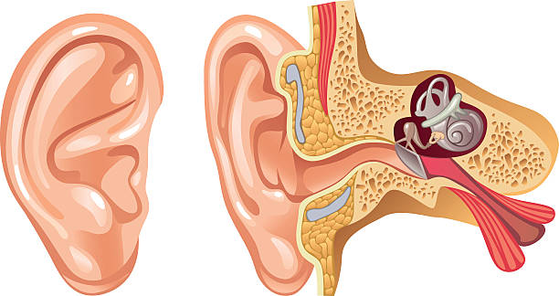

EL SISTEMA AUDITIVO HUMANO
¿Qué es?

El sistema auditivo humano es el conjunto de órganos y estructuras que hacen posible el sentido del oído, permitiendo la captación, procesamiento e interpretación de las ondas sonoras.
Su función esencial es actuar como un conversor de energía: transforma las variaciones de presión del aire (ondas sonoras) en impulsos eléctricos que el cerebro puede entender y dotar de significado (lenguaje, música, alerta, etc.).
Además de la audición, una parte fundamental del sistema auditivo (el oído interno) es responsable de mantener el equilibrio del cuerpo.
CARACTERÍSTICAS
Fidelidad Perfecta: La característica clave; el archivo descomprimido es idéntico (bit a bit) a la fuente original.
Eliminación de Redundancia: Se basa en algoritmos que solo eliminan la información repetitiva o redundante en los datos digitales, sin afectar la calidad acústica.
Moderada Reducción de Tamaño: Ofrece un ahorro de espacio significativo, pero los archivos siguen siendo grandes (generalmente entre el 50% y el 70% del tamaño original).
Formatos Comunes: FLAC, ALAC (Apple Lossless Audio Codec), WAVPACK.
¿Cómo se forman?
Compresión Sin Pérdida
La compresión de audio sin pérdida busca reducir el tamaño del archivo digital sin eliminar absolutamente ningún dato de la señal acústica original. Este método se logra mediante técnicas de compresión de datos que identifican y eliminan la redundancia en la información. En lugar de registrar patrones de datos repetitivos una y otra vez, el algoritmo los sustituye por referencias o códigos más cortos, similar a cómo funciona un archivo ZIP. Al descomprimir el archivo, el reproductor utiliza esas referencias para reconstruir el audio original con un 100% de fidelidad a nivel de bit. Los formatos más comunes que emplean esta técnica son FLAC y ALAC.
Compresión con Pérdida
El sistema de compresión de audio con pérdida se logra eliminando permanentemente datos del archivo original que el oído humano es incapaz de percibir o que percibe de forma deficiente. Este proceso se basa en el modelo psicoacústico, una simulación de las limitaciones auditivas humanas. Las técnicas principales incluyen el enmascaramiento de frecuencia (descartar sonidos suaves que son tapados por sonidos fuertes cercanos) y el enmascaramiento temporal (descartar sonidos que son breves o que quedan ocultos justo antes o después de un sonido muy intenso). El resultado es una reducción drástica del tamaño del archivo (como en los formatos MP3 o AAC), pero la señal final es una aproximación irreversible del original.
CARACTERÍSTICAS
Pérdida de Datos: Es la característica principal; se descarta información de la señal original de forma permanente.
Modelo Psicoacústico: Utiliza las limitaciones del oído humano (como el enmascaramiento de sonidos) para decidir qué datos eliminar.
Alta Reducción de Tamaño: Permite lograr los tamaños de archivo más pequeños (por ejemplo, reducir el audio original hasta 10 veces).
Formatos Comunes: MP3, AAC, Ogg Vorbis.
Calidad Variable: La calidad final depende de la tasa de bits (bitrate) utilizada; a menor bitrate, más pérdida y menor calidad percibida.
Checa este link, te dara más informacón sobre la historia de como funciona el oído